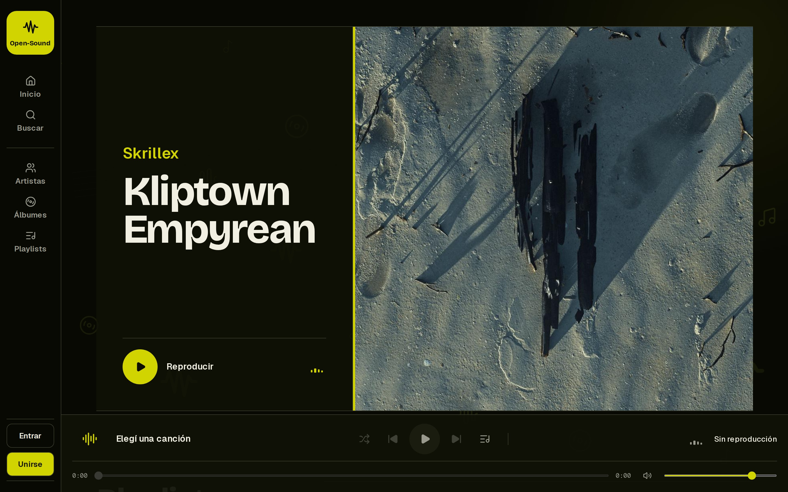

\nOpen Sound
Una experiencia de streaming musical basada en el catálogo de Audius. Permite descubrir canciones y colecciones, escuchar música desde un reproductor compartido y gestionar una biblioteca personal con favoritos y playlists. Supabase se encarga de la autenticación y los datos de usuario.
 \n
\n